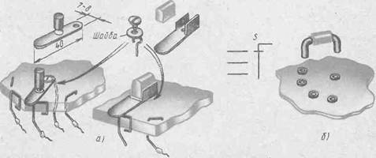
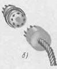

Самодельные переключатели и разъемы
На рис. 1, а показаны две конструкции самодельных переключателей. Ползунок любого из них сделай из полоски латуни или меди толщиной 0,5...0,7, шириной 7...8 и длиной около 40 мм. Предварительно заготовку отгартуйте легкими ударами молотка, положив ее на напильник; так делают для того, чтобы ползунок лучше пружинил и плотно прижимался к головкам контактов. Края ползунка немного изогни вверх, тогда он будет плавно, без заеданий переходить с контакта на контакт. А чтобы прикосновение руки не влияло на настройку приемника, приделай к ползунку деревянную или пластмассовую ручку. К панели ползунок крепи винтом с гайкой или шурупом, вокруг которого он должен поворачиваться, но не болтаться на нем. Под ползунок подложи металлическую шайбу.
Контакты переключателя можно сделать из отрезков медной проволоки диаметром 2... 3 мм, согнутых наподобие буквы "П" и пропущенных через отверстия в панели, из стреляных гильз малокалиберных патронов или можно использовать для этой цели шурупы с круглой шляпкой. Важно, чтобы выступающая над панелью часть контакта была гладкой и имела надежный контакт, с ползунком.

Рис. 1. Самодельные переключатели
На рис. 1,б показана еще одна конструкция переключателя. Это П-образная скоба, согнутая из толстой медной проволоки. Ее вставляют в гнезда, замыкая центральное гнездо с гнездами, расположенными по окружности. На среднюю часть скобы надевают отрезок поливинилхлоридной или резиновой трубки или эту часть обертывают изоляционной лентой.
Такие или подобные им переключатели можно использовать не только в детекторных, но и в простых транзисторных и ламповых приемниках, например в качестве переключателей диапазонов.
На рис. 2 показана возможная конструкция самодельного многоконтактного разъема. Его гнездовой частью служит восьмиконтактная ламповая панелька без каких либо переделок, а штепсельной частью пластмассовый октальный цоколь от вышедшей из строя электронной лампы. Из штырьков цоколя, прогревая их паяльником, надо удалить выводные проводники электродов лампы и впаять в них концы отрезков гибких изолированных проводов. После этого внутреннюю часть цоколя можно залить эпоксидным клеем или расплавленным варом. Направляющий ключ на цоколе и соответствующее ему отверстие в центре ламповой панельки исключает ошибочное соединение частей такого разъема.

Рис. 2. Самодельный разъем